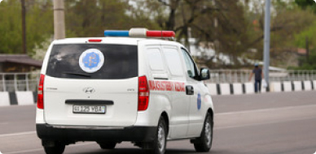

$ 10137.2 P 138.26 E 10988.72
Подписатся
Узбекистана
Мир
Экономика
Политика
Общество
Технологии
Спорт
Культура
Происшествия
Туризм
Коронавирус COVID-19 в Узбекистане
Инфицированы 2753
Выздоровели 2245
Умерли 12
Мирзиёев рассказал, зачем было построено Сардобинское водохранилище 05:28 / 16.05.2020
Карантин в Узбекистане продлен до 1 июня 05:28 / 16.05.2020
Обмелевшая Сардоба: стихия или человеческий фактор? 05:28 / 16.05.2020
Следствие проверяет четыре версии прорыва Сардобинской плотины 05:28 / 16.05.2020

Выявлено еще 7 случаев коронавируса 05:28 / 16.05.2020
Итоги второго месяца карантина 05:28 / 16.05.2020
Хотите узнать новости первыми? подключите уведомления!
Включит уведомления!
По факту прорыва Сардобинского водохранилища возбуждено уголовное дело После прорыва дамбы Сардобинского водохранилища возбуждено уголовное дело, сообщили в пресс-службе Генпрокуратуры Узбекистана. 11:31 / 15.05.2020
Мирзиёев: «Нам следовало бы принять некоторые правила карантина как часть повседневной жизни» Президент Узбекистана заявил, что после того, как угроза коронавируса исчезнет, в стране следовало бы принять некоторые правила периода карантина как часть своей повседневной жизни. 11:31 / 15.05.2020
img

.png)
.jpg)